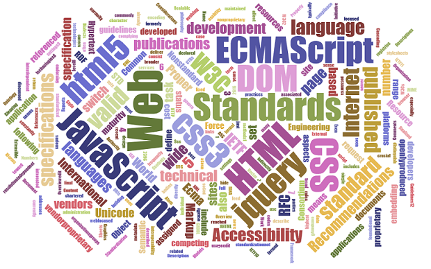

Concepts
HTTP
The Hypertext Transfer Protocol (HTTP) is an application protocol for distributed, collaborative, hypermedia information systems.[1] HTTP is the foundation of data communication for the World Wide Web.
GET /index.html HTTP/1.1
Host: www.example.comHTTP/1.1 200 OK
Date: Mon, 23 May 2005 22:38:34 GMT
Server: Apache/1.3.3.7 (Unix) (Red-Hat/Linux)
Last-Modified: Wed, 08 Jan 2003 23:11:55 GMT
ETag: "3f80f-1b6-3e1cb03b"
Content-Type: text/html; charset=UTF-8
Content-Length: 131
Accept-Ranges: bytes
Connection: close
HTML
HTML or HyperText Markup Language is the standard markup language used to create Web pages.
HTML is written in the form of HTML elements consisting of tags enclosed in angle brackets (like <html>). HTML tags most commonly come in pairs like <h1> and </h1>, although some tags represent empty elements and so are unpaired, for example <img>. The first tag in a pair is the start tag, and the second tag is the end tag (they are also called opening tags and closing tags).
Do you really know html?
<P> This is not html, it is plain text.<br><br>
I said:<br>This is html, not plain text.html 4.01
<p>This is not html, it is plain text.<p>
I said:<br>This is html, not plain text.xhtml 1.0
<p>This is not html, it is plain text.</p><p>
I said:</br>This is html, not plain text.</p>SEO
<p> This is not <abbr title="Hyper Text Markup Language">HTML</abbr>,it is plain text.<p>
<cite>I</cite>said:<br> <q>This is html, not plain text.</q>
DOM
The Document Object Model (DOM) is a cross-platform and language-independent convention for representing and interacting with objects in HTML, XHTML, and XML documents. The nodes of every document are organized in a tree structure, called the DOM tree. Objects in the DOM tree may be addressed and manipulated by using methods on the objects. The public interface of a DOM is specified in its API.
 http://en.wikipedia.org/wiki/Document_Object_Model
http://en.wikipedia.org/wiki/Document_Object_Model
CSS
Cascading Style Sheets (CSS) is a style sheet language used for describing the look and formatting of a document written in a markup language. While most often used to change the style of web pages and user interfaces written in HTML and XHTML, the language can be applied to any kind of XML document, including plain XML, SVG and XUL. Along with HTML and JavaScript, CSS is a cornerstone technology used by most websites to create visually engaging webpages, user interfaces for web applications, and user interfaces for many mobile applications.
http://en.wikipedia.org/wiki/Cascading_Style_SheetsHTML5
HTML5 is a core technology markup language of the Internet used for structuring and presenting content for the World Wide Web. As of October 2014 this is the final and complete[2] fifth revision of the HTML standard of the World Wide Web Consortium (W3C). The previous version, HTML 4, was standardised in 1997.
Its core aims have been to improve the language with support for the latest multimedia while keeping it easily readable by humans and consistently understood by computers and devices (web browsers, parsers, etc.). HTML5 is intended to subsume not only HTML 4, but also XHTML 1 and DOM Level 2 HTML.
 http://en.wikipedia.org/wiki/HTML5
http://en.wikipedia.org/wiki/HTML5
JavaScript
JavaScript (/ˈdʒɑːvəˌskrɪpt/; JS) is a dynamic computer programming language.[5] It is most commonly used as part of web browsers, whose implementations allow client-side scripts to interact with the user, control the browser, communicate asynchronously, and alter the document content that is displayed.[5] It is also used in server-side network programming with runtime environments such as Node.js, game development and the creation of desktop and mobile applications.
http://en.wikipedia.org/wiki/JavaScriptEcmaScript
ECMAScript is the scripting language standardized by Ecma International in the ECMA-262 specification and ISO/IEC 16262. The language is widely used for client-side scripting on the web, in the form of several well-known implementations such as JavaScript, JScript and ActionScript.
http://en.wikipedia.org/wiki/ECMAScript